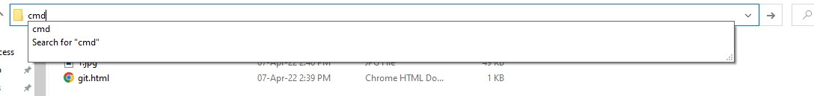
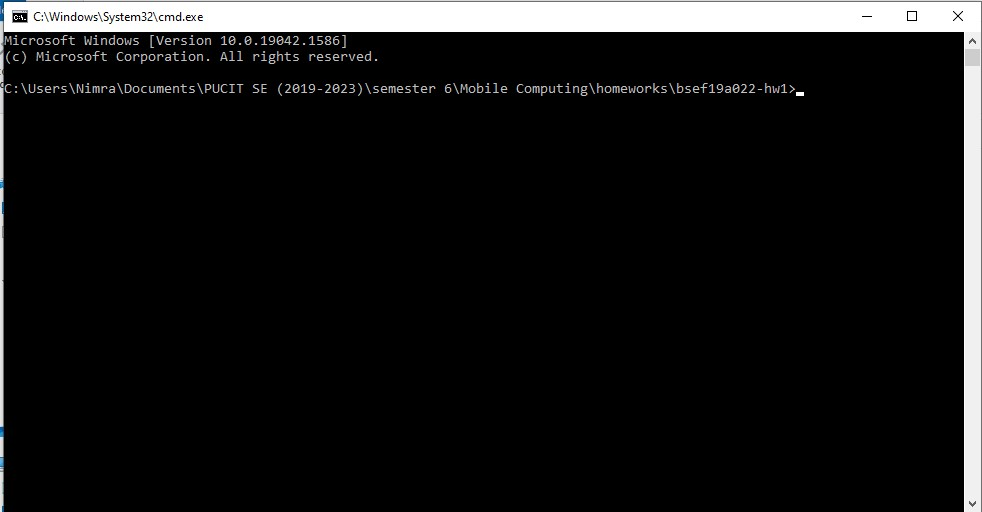
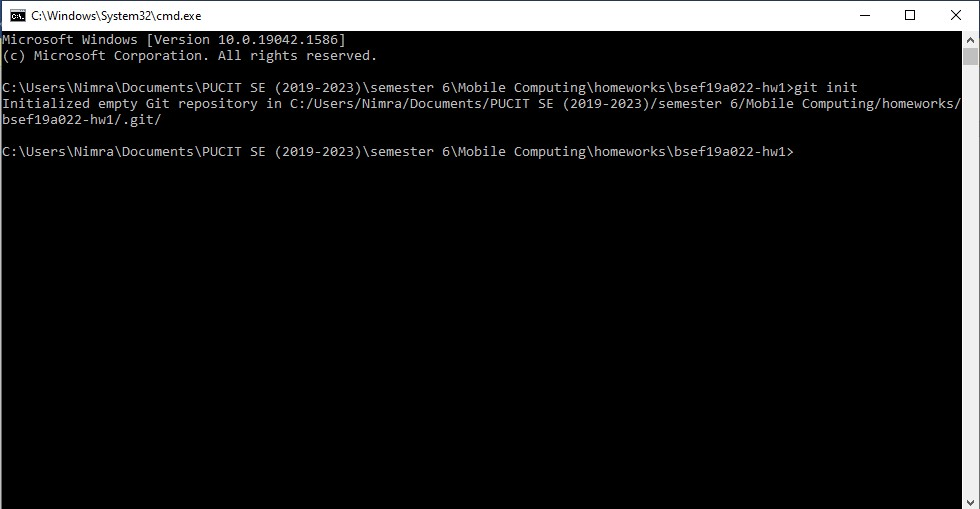
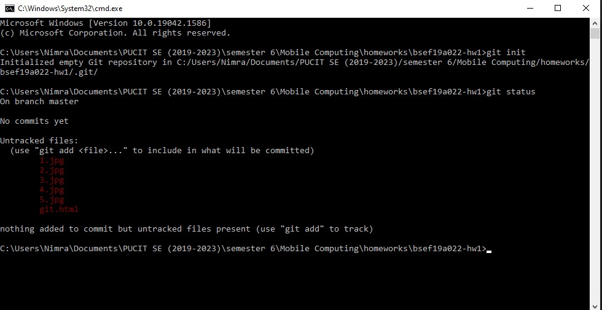
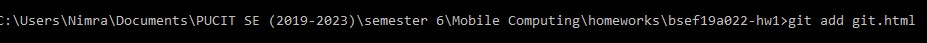
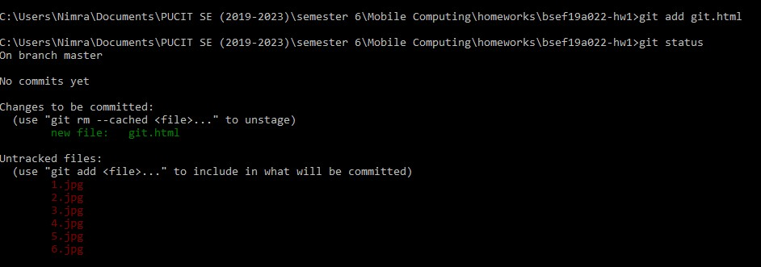
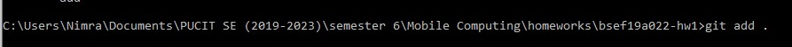
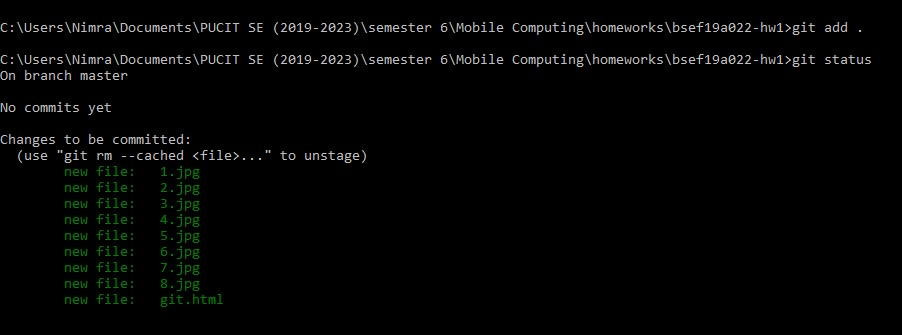

Welcome To GitHub
1-Create an HTML file in your folder

2-Overwrite your file path with "cmd"

3-A dialog box will be opened

4-Write "git init" and press enter

5-A hidden folder will be created in your folder named ".git"

6-Check the status of files using a command named "git status"

7-All files are shown in red color because none of them is added in repository
8-You may use "git add name.extension" command to add a single file in your repository

9-Let's check for file status using "git staus"

10-The newly tracked file "git.html" is tracked. We can also use a command named "git add .". This command will add all the files in the repository

11-Let's check for all tracked files status using "git staus"
